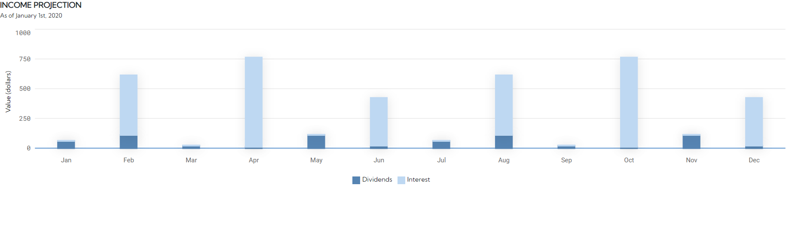

For my first two work terms, I participated in an 8-month internship at PureFacts Financial Solutions. While the company's office is based in Toronto, my work was done remotely from my home in Guelph. My first experience coding in a professional setting helped me hone my communication skills, as well as becoming comfortable with the use of various languages and technical skills.
Combining corporate and personal values - that's what makes PureFacts Financial Solutions stand out as a rapidly-growing organization in the world of financial technology. Chosen as one of the 100 most innovative WealthTech firms in the world by WealthTech 100, PureFacts focuses on creating software that aids wealth and asset management firms in keeping their own customers happy while reducing costs and risk. The company provides features such as advanced fee calculation and automatic report generation to ligthen the load and increase productivity for these businesses.
The PureFacts motto is "Hungry, Humble, Smart" - that means always striving for greatness and actively finding ways to improve yourself... and others! PureFacts works through their PurePossibilites program to provide food, shelter, and education to those in need, including scholarship and mentorship opportunites for students from less fortunate backgrounds (including myself, the recipient of the award in 2021!)
When first work term began, I was uncertain about how to make goals that were both challenging and achievable. Now, with it coming to a close, I can say in confidence that I have learned just as much about making goals for myself as I've learned from the goals themselves.
I believe that my goals were both helpful and relevant to my work tasks, if not a bit naive. I wasn't yet sure what I wanted professionally; As I worked with every member of the core development team across both legacy and upcoming software, I was given the freedom to explore various aspects of the company's tech stack and learn not only about the software itself, but about my own interests and what I wanted to work with. For example, I quite easily picked up front-end development tasks and was able to move on to larger, more challenging projects like creating widgets for an online dashboard. Overall, I feel that I successfully accomplished all my goals except 2. This was the most rigidly-defined goal, as the others were more focused on familiarizing myself with coding in a professional setting. I believe that the main reason I was unsuccessful was due to a lack of personal understanding and flexibility. At the beginning of my term I worke primarily on small bugs and UI cleanup, so one task a day seemed more than reasonable - but some tasks will inevitably take longer than others, and unprecedented complications and blocks can arise when working with other developers. So, while I didn't quite meet the requirement that I set for myself, I still learned a lot from the goal and will carry this understanding with me through my future experiences.
As a Software Development Intern at PureFacts, I worked full-stack to design, develop and maintain two pieces of software for the company: their legacy PureFacts application, and a new in-progress application for their next generation of software.
The skills required for the job involved a range of languages and frameworks including React and ExtJS, Typescript, C#, and SQL, as well as source control using git and Azure DevOps. From my classes I had had experience with some basic Javascript, SQL and GitLab, but almost everything about the company's codebase was new to me when I first set up the application on my local computer. Through careful observation and thoughtful questions, as well as hands-on experience completing tickets, I was able to navigate and quickly learn the skills necessary to succeed - even exceeding my employer's expectations for growth and taking on larger projects. Below is a graph that I developed for the company's report generation system:
During my work term I also learned how to effectively communicate my progress - as well as questions and concerns - with other team members, primarily during our daily morning standups. By the end of my term I felt that I could easily work with members of my team, while also improving my own independence and confidence in picking up larger tasks.
While I started my work term inexperienced and unsure about what to expect, I feel that just a few months working with PureFacts have brought me a long way. I have quickly become comfortable with developing new software using various programming languages as well as maintaining and fixing older software. Additionally, I have gained critical experience in communicating and working as part of a team. My success in achieving my own personal goals leaves me confident in the work term to come, and my future in Computer Science as a whole.
I would like to thank Seung-Mi Shin - my mentor - for supporting me and being a friendly face throughout this journey, Zeyad Abdulghani for providing support and supervision as I navigated new territory and learned the ropes, and the PureFacts team as a whole for being an excellent and knowledgeable group to work with every step of the way.